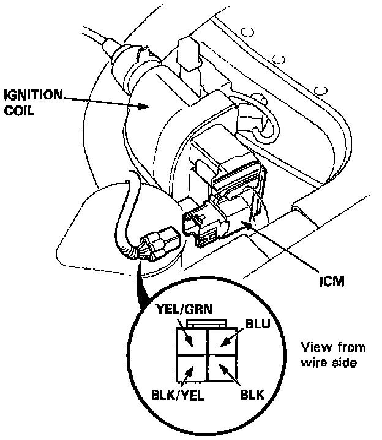

Ignition Control Module: Testing and Inspection
INSPECTIONNOTE: Perform an input test on the ignition control module after finishing the fundamental tests for the ignition system and fuel emission system. The tachometer should operate normally.
Disconnect the 4P connector from the ignition control module. Make the following input tests at the connector terminals. If all tests prove OK, yet the system still fails to work, replace the ignition control module.

1. Check for continuity between the BLK wire and body ground.
- If there is continuity, go to step 2.
- If there is no continuity, check for: An open in the BLK wire, disconnected terminals or Poor ground (G101).
2. With the ignition switch ON, there should be battery voltage between the BLK/YEL wire and BLK wire.
- If there is battery voltage, go to step 3.
- If there is no voltage, check for an open in the BLK/YEL wire, disconnected terminals, or perform ignition coil test.
3. With the ignition switch ON, there should be battery voltage between the BLU wire and BLK wire.
- If there is no voltage, Check for an open in the BLU wire between the ignition coil and ignition control module, or perform ignition coil test.